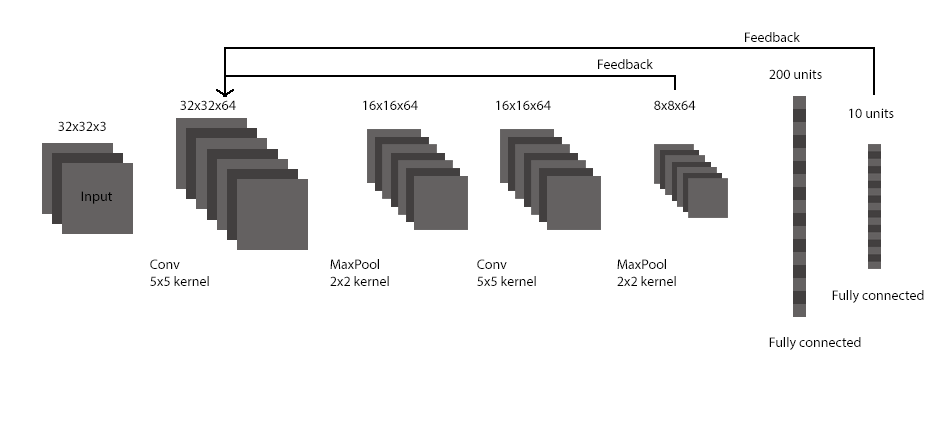
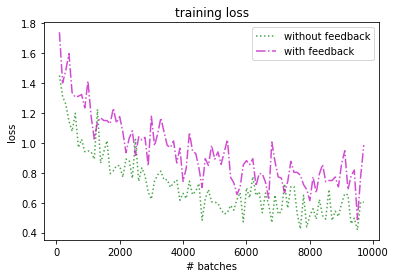
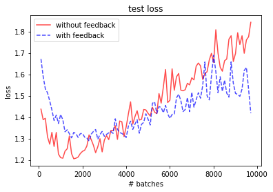
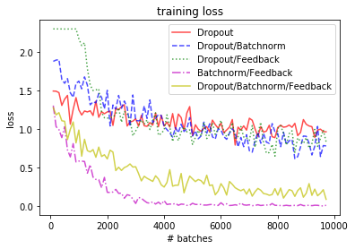
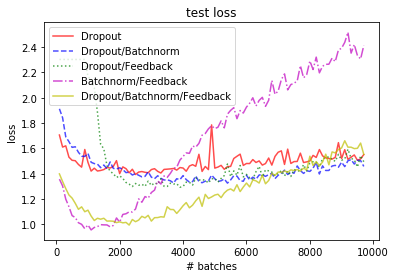
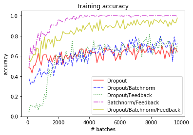
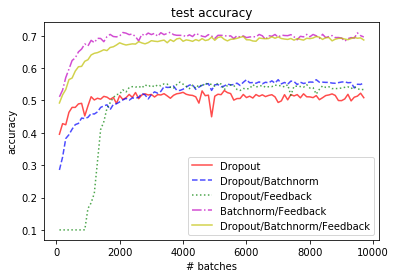

CIFAR-10 Classification
Classification on the CIFAR-10 dataset is performed using the following
convolutional architecture:

The two convolution layers as well as the first fully connected layer are followed
by a rectified linear unit, while the final fully connected layer has a softmax
activation.
The loss curves without and with feedback (two timesteps) are shown below:


As can be seen, the plots show significant overfitting, although the model
with feedback seems to exhibit slightly less overfitting.
In an effort to reduce overfitting, dropout and batch normalization are explored.
Dropout is applied to the first fully connected layer (in both passes) and batch normalization
is applied after both of the two convolutional layers, i.e.
INPUT --> CONV --> RELU --> BATCHNORM --> MAXPOOL --> ... --> FC
--> RELU --> DROPOUT --> FC --> SOFTMAX
The results for different combinations of feedback, dropout, and batch normalization are given below:




Note that while three of the explored combinations do not exhibit significant overfitting,
the two best performing ones in terms of test accuracy do overfit. This could simply
be mitigated with early stopping, as there do not seem to be any significant improvments
after 2000 iterations.